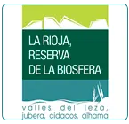
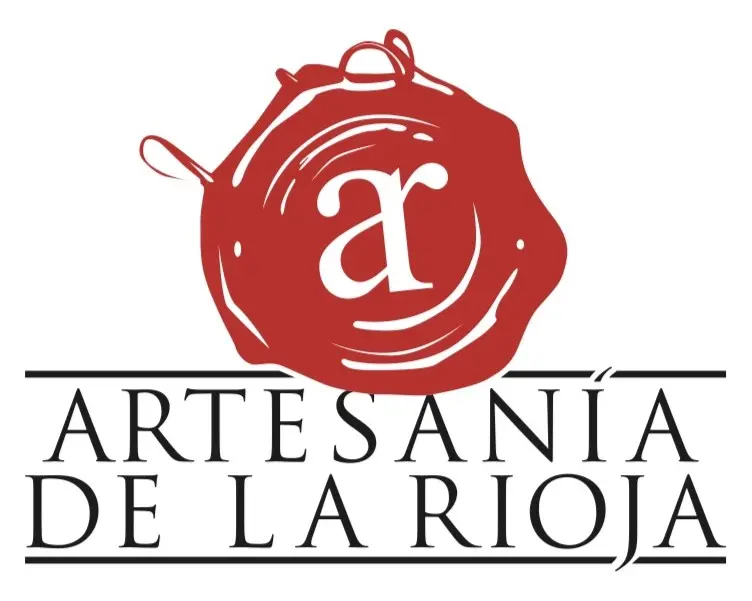
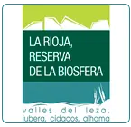
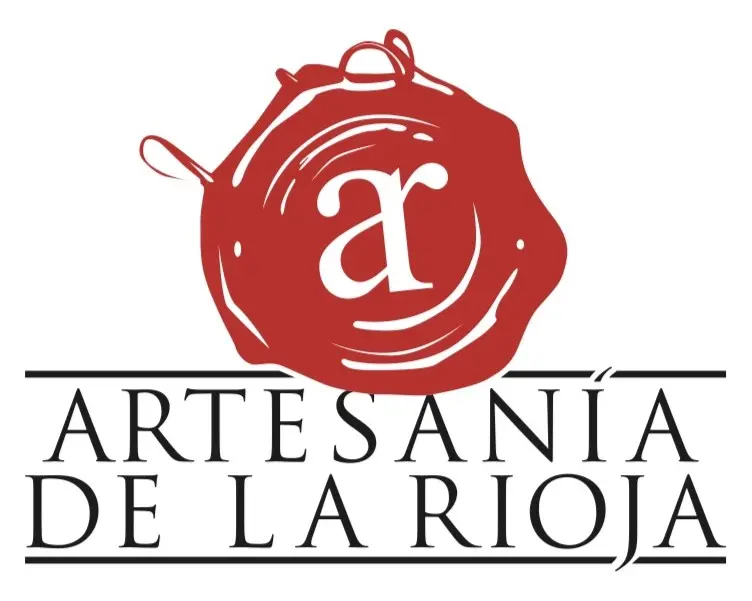

Embutidos Luis Gil
En el Valle de Ocón, rodeado de encinas y naturaleza viva, la familia Gil lleva cuatro generaciones dedicándose con pasión a la ganadería. En su finca El Encinar, crían en libertad cerdos Duroc en un entorno único: la Reserva de la Biosfera de La Rioja. De ese compromiso con la tierra y los animales nacen sus carnes, embutidos y jamones ecológicos.
Todos sus productos cuentan con certificación ecológica y se elaboran únicamente con ingredientes 100% naturales. No hay atajos: sólo buena carne, procedente de su propia ganadería, y condimentos de origen ecológico.
 


